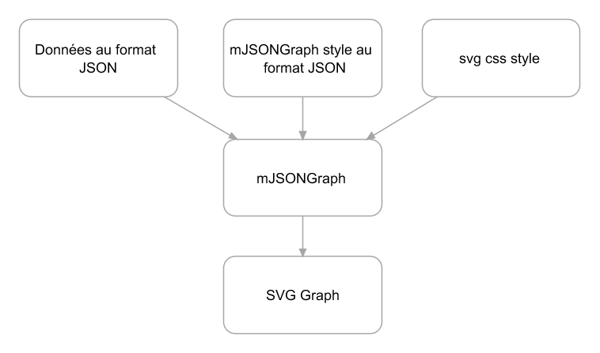

mJSONGraph.
Objectif: créer des représentations graphiques de données basées sur des modèles JSON.
En cours : JSON data + mJSONGraph + cssStyle + JSONStyle --> une représentation graphique des données.
mJSONGraph est développé en javascript avec Backbone pour la modélisation des objets et d3.js pour le rendu graphique. (d3.js doit à terme être remplacé par une bibliothèque propre à mJSONGraph)
mJSONGraph est un jeune moteur de modèle, pour le moment seuls les graphismes sous formes d'histogrammes sont développés et encore de façon basique.
A terme une application pour construire de nouveaux modèles doit être développée.
Le tout est sous licence MIT.
Les objets de mJSONGraph sont structurés de la façon suivante:

Comment construire un modèle JSON sous forme d'histogramme.
<!DOCTYPE html>
<html>
<head>
<meta charset="UTF-8">
<title>Index.html</title>
<link rel="stylesheet" href="css/svgDefault.css" type="text/css" />
<style type='text/css'>
<script type="text/javascript" src="http://cdnjs.cloudflare.com/ajax/libs/headjs/0.96/head.min.js"></script>
<script language="javascript">
head.js("http://cdnjs.cloudflare.com/ajax/libs/jquery/1.8.0/jquery-1.8.0.min.js")
.js("http://cdnjs.cloudflare.com/ajax/libs/underscore.js/1.3.3/underscore-min.js")
.js("http://cdnjs.cloudflare.com/ajax/libs/backbone.js/0.9.2/backbone-min.js")
.js("http://cdnjs.cloudflare.com/ajax/libs/d3/2.10.0/d3.v2.min.js")
.js("js/svgFunction.js")
.js("js/svgCanvas.js")
.js("js/svgRect.js")
.js("js/svgText.js")
.js("js/svgBar.js")
.js("js/svgHisto.js");
head.ready(function() {
$(document).ready(function(){
//place pour le code
});//end $document.ready
});//end head
</script>
</head>
<body>
<div id="mglobal">
<div id="mleft">Left</div>
<div id="mright">right</div>
</div>
</body>
</html>
L'utilisation des bibliothèques suivantes est nécessaire pour utiliser myGraphJSON:
- head.js : pour télécharger les autres librairies de manière asynchrone
- jquery : pour vérifier le bon chargement de la page
- underscore : car nécessaire à backbone
- backbone : pour modéliser les objets
- d3.js : pour afficher le svg
- svgFunction.js : bibliothèque de fonctions qui sont utilisées dans plusieurs objets myGraphJSON
- svgCanvas.js : description de l'objet svgCanvas
- svgRect.js : description de l'objet svgRect
- svgText.js : description de l'objet svgText
- svgBar.js : description de l'objet svgBar
- svgHisto.js : description de l'objet svgHisto